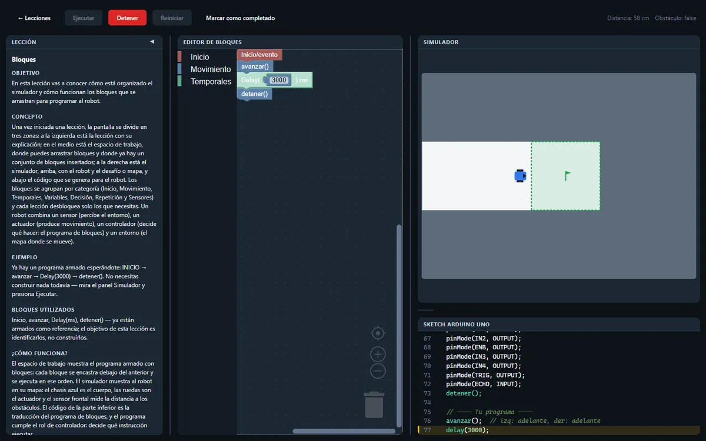
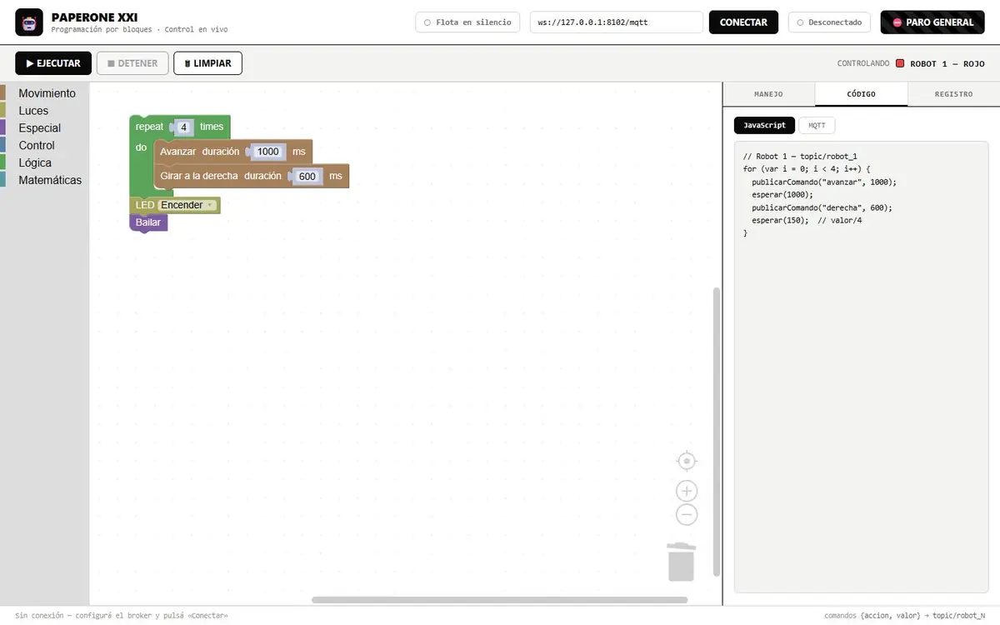

El problema
Para mover un robot por primera vez, un estudiante tenía que aprender a la vez el microcontrolador, el IDE de Arduino, C++, el puente H y la lógica de control. Si algo fallaba, el robot simplemente no hacía nada.
Hacía falta una forma de que alguien que nunca programó viera al robot moverse en los primeros minutos, primero en pantalla y después con el hardware real.
Qué hice
- Simulador con 8 lecciones
- De “Bloques” a “Integración”, pasando por secuencias, variables, repeticiones y sensores. Cada lección explica el concepto, deja un desafío y comprueba sola si el robot cumplió el criterio. La siguiente se desbloquea al completar la anterior.
- Sensor de distancia simulado
- El robot mide la distancia al obstáculo de enfrente, como el sensor ultrasónico del robot real, así los programas pueden decidir qué hacer cuando algo les bloquea el camino.
- Sandbox con editor de mapas
- Práctica libre con todos los bloques: se dibujan muros, inicio y meta sobre una grilla, y el mapa queda guardado en el navegador.
- El código del robot real
- Al lado de los bloques se genera un sketch de Arduino UNO completo, listo para cargar, y mientras corre el programa se resalta la línea que se está ejecutando.
- Control en vivo de la flota
- En el laboratorio: bloques propios y una consola con flechas y teclado para manejar los 6 robots ESP32 por MQTT, con un paro general que frena a todos a la vez.
Más pantallas


Stack
Simulador
- JavaScript
- Blockly
- Canvas
Sin build ni dependencias más allá de Blockly: se publica como archivos estáticos.
Robots
- Arduino UNO
- ESP32
- MQTT
- Python
- L298N
- HC-SR04
El sketch generado apunta a un Arduino UNO con puente H y sensor ultrasónico. Los robots del laboratorio reciben comandos JSON por MQTT a través de un puente en Python.
Decisiones
Un solo programa para todo. La simulación, la línea resaltada y el sketch de Arduino salen del mismo árbol de programa. Lo que se ve moverse en pantalla es lo que se carga en el robot.
Las acciones del robot real. El simulador solo tiene movimientos que existen en el firmware de PaperOne. Nada que funcione en pantalla y no en el laboratorio.
La devolución describe, no corrige. Si el desafío no se cumple, el simulador cuenta qué hizo el robot, pero nunca dice qué bloque cambiar. El razonamiento lo hace el estudiante.
Paro general siempre visible. Con seis robots en una mesa, frenar todo tiene que estar a un clic (o a Esc) desde cualquier pantalla.
Verlo andando
El simulador es público y tiene un sandbox para probar sin seguir las lecciones. El control de los robots reales funciona solo en el laboratorio.